A Shiba no le hicimos una web. Le hicimos la operación.
Distribuye climatización con dos marcas propias, IKA y LTR. Empezó por la
identidad y hoy tiene el circuito entero funcionando: el manual de marca,
los sitios, las piezas que salen a pauta, los reels y un agente que asesora
por BTU, cierra la venta y le avisa al encargado cuando entra un depósito.
Manual de marcaDos sitiosAgente de WhatsAppReels8 piezas de campañaTodo esto es de un solo cliente
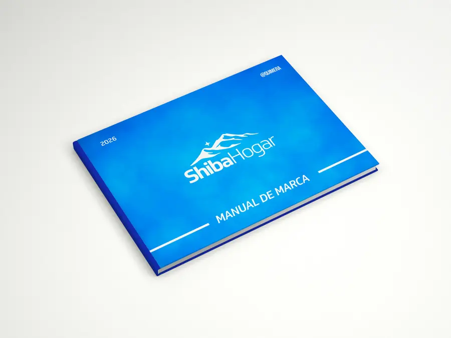
IdentidadManual de marcaWebika.com.bo · ltr
«En IKA tenemos la Serie AA-32 — Inverter, hasta 71% de ahorro. ¿Para qué espacio lo necesitás?»
El agente, en la conversación real
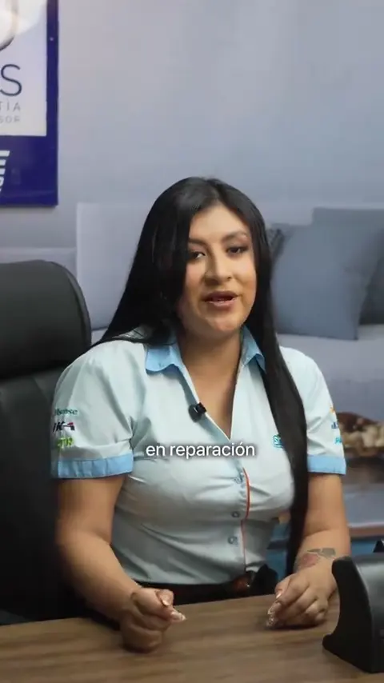
ContenidoReel · tocá para verloPautaCampaña IKAPautaBanner Shiba Hogar
Automatización con IA
Agentes atendiendo por empresas reales.
No son demos: son las conversaciones tal como ocurrieron. Pasan solas y se frenan al poner el mouse. En cada una está el enlace a la captura original.
Catálogo · inscripciones · calificación de leads registro con aviso legal · asesoría técnica Cinco operando y uno en desarrollo
Bolivia Fitness
Hola, buenos días
¡Bienvenido a Bolivia Fitness! 🦁 Te escribe Edgar, tu asesor de ventas. ¿En qué te ayudo? Manejamos Proteínas, Creatinas y Combo. ¿Cuál te interesa?
¿En dónde están? Quiero saber las sucursales
Rodry, tenemos tiendas en: Santa Cruz, La Paz, Cochabamba, Oruro y Sucre. En Tarija abrimos pronto. ¿Cuál te gustaría?
Academia Diamond Art
Hola, buenos días
Hola, somos Diamond Art, academia de Gimnasia y danza 💎 Seleccioná la dirección de tu preferencia:
📍 Sucursal Norte: Av. Beni (7mo y 8vo anillo, #1735)
📍 Sucursal Centro: Calle Aroma 574 (YMCA)
1
Perfecto 😊 Seleccioná una opción:
Deseo agendar una clase de prueba
Información sobre costos, horarios y ubicación
Meta Miami Investment Forum
Hola, buenos días
¡Hola, buen día! 👋 El evento que organizamos para inversión inmobiliaria en Miami es gratuito y sin compromiso. ¿Qué te llamó más la atención de invertir en Miami? 📈
Generar ingresos en dólares
Proteger mi dinero
Inversiones fuera del país
Uso personal o vacacional
Solo informarme
Tramitar estatus migratorio
3
¡Perfecto, Rodry! Invertir fuera del país es una excelente idea para diversificar…
Xiaomi Bolivia
Hola, quiero participar en el sorteo 🎁 ¿Qué debo hacer?
¡Hola! 👋 Te damos la bienvenida al sorteo de Xiaomi Bolivia: Para nuestra indispensable, mamá.
Para participar necesitamos algunos datos. Vamos a pedírtelos uno por uno.
📋 Importante: tus datos serán usados únicamente para este sorteo, conforme a la normativa de la Autoridad de Fiscalización del Juego.
Quimera AI
Hola, buenas tardes. Me gustaría saber lo que pueden hacer
¡Hola! Soy Alexandra, asistente de Quimera Group 😊 Nos especializamos en redes sociales, desarrollo web, campañas publicitarias, chatbots con IA y automatizaciones. ¿Hay algún servicio que le interese?
Me interesa el chatbot y automatizaciones
Perfecto 🙌 ¿A qué rubro se dedica y qué proceso le gustaría automatizar?
En desarrollo
Shiba Hogar
Quiero ver los tipos de productos que tienen
Tenemos dos marcas excelentes: IKA y LTR. ¿Cuál te gustaría conocer?
IKA
En IKA tenemos: Serie FH On/Off (12k, 18k, 24k BTU) · Serie FJ premium para espacios grandes (36k) · Serie AA-32 Inverter, hasta 71% de ahorro. ¿Para qué espacio lo necesitás?
Alrededor de cada sistema
Y todo lo que lo pone a andar.
La identidad, el contenido y la pauta salen del mismo equipo que arma el sistema. Por eso hablan igual.
Identidad
Manual completo por marca: logotipo, paleta, tipografías y usos. Tocá una tapa para verla grande.
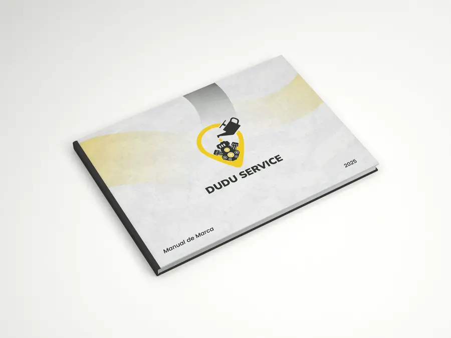
Dudu Service
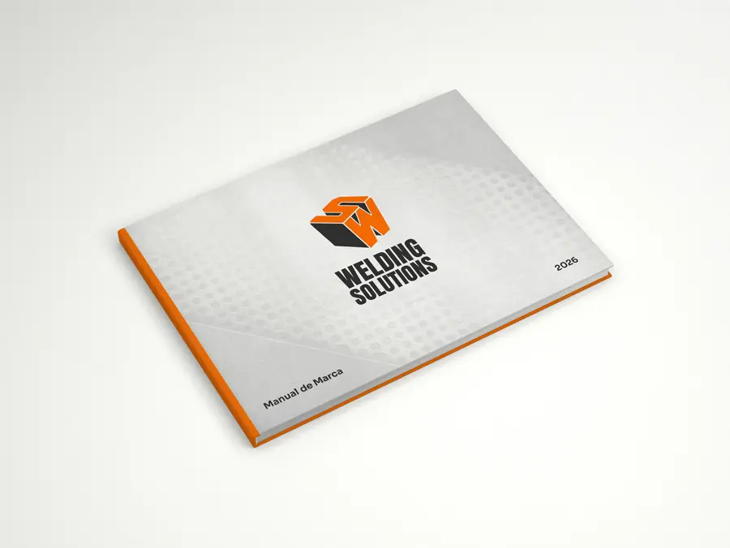
Welding Solutions
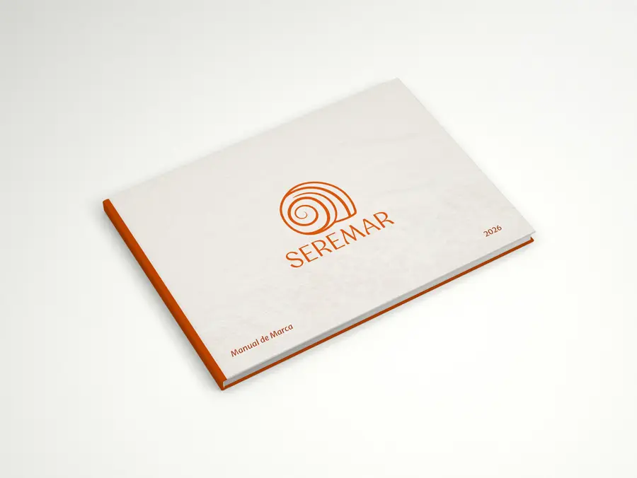
Seremar
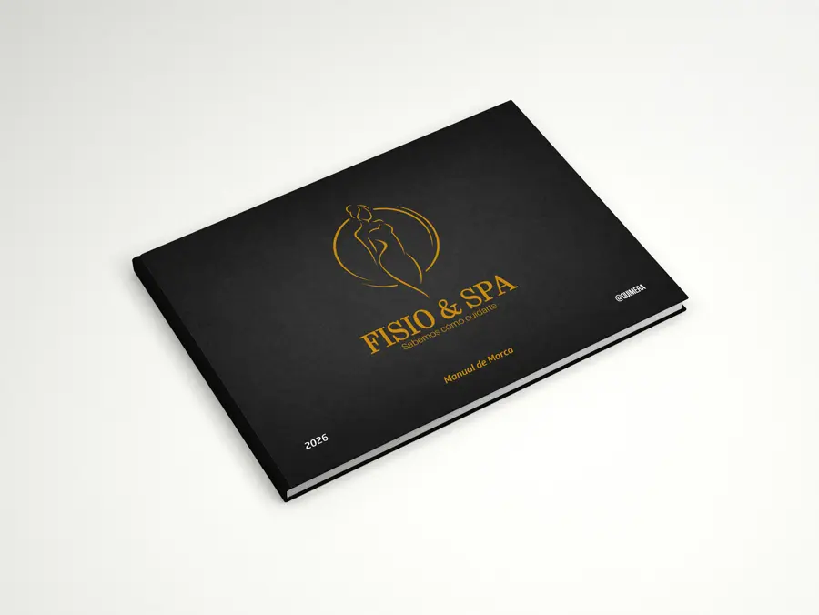
Fisio & SpaShiba Hogar
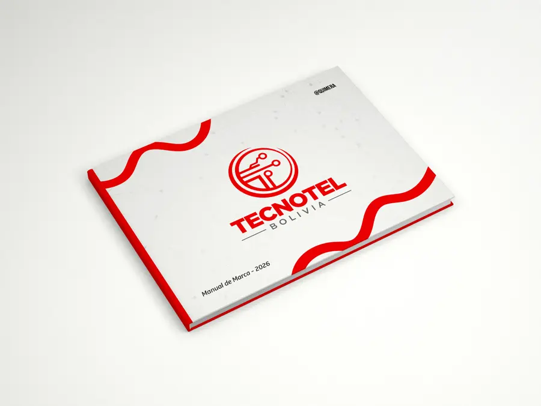
Tecnotel
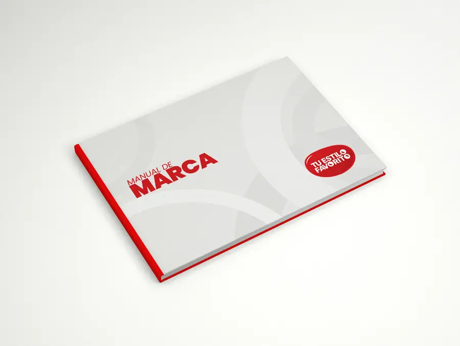
Tu Estilo Favorito
Contenido
Rodado y editado por el equipo. Corren solos y sin sonido; tocá «♪» para verlo grande y escucharlo.
Tu Estilo FavoritoShiba Hogar
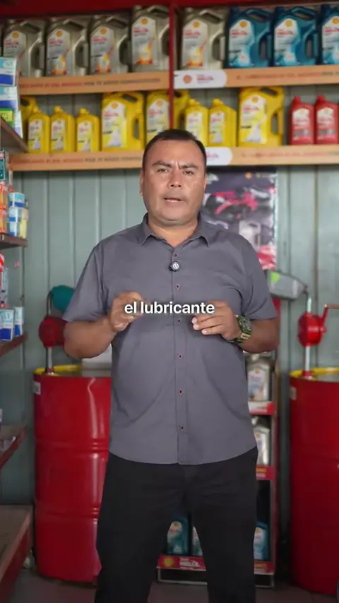
Servicentro
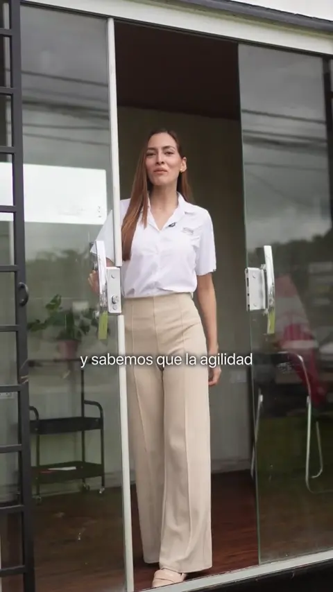
Metal Forte
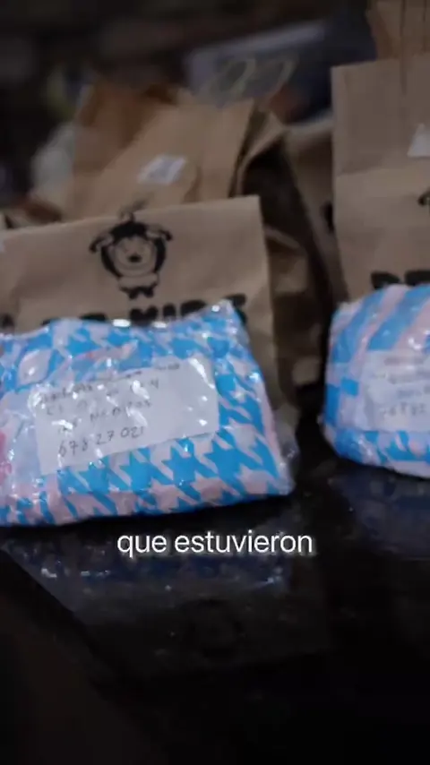
Rekids
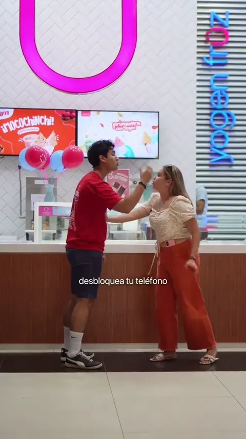
Patio Belén
Pauta
Piezas que salieron al aire, para rubros muy distintos. Hay muchas más — tocá cualquiera para verla completa.
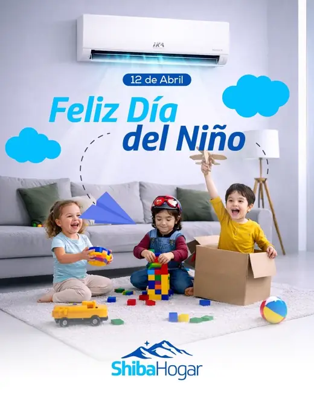
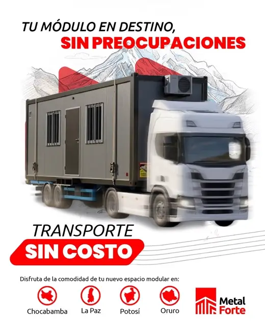
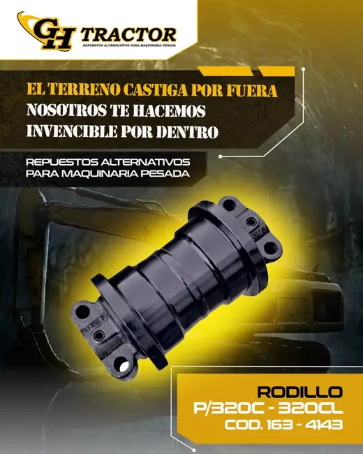
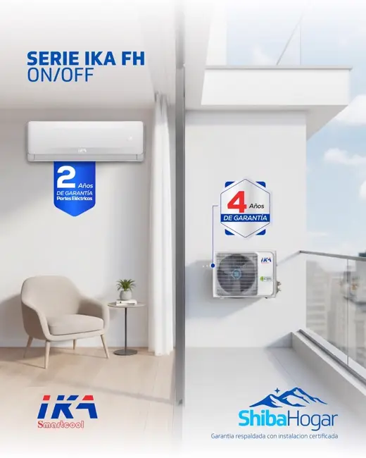
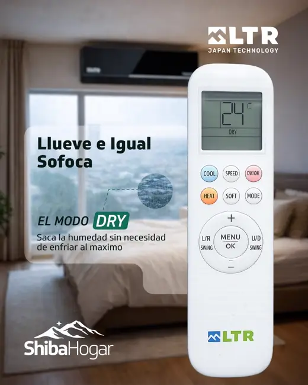
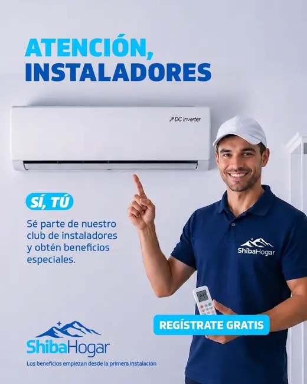
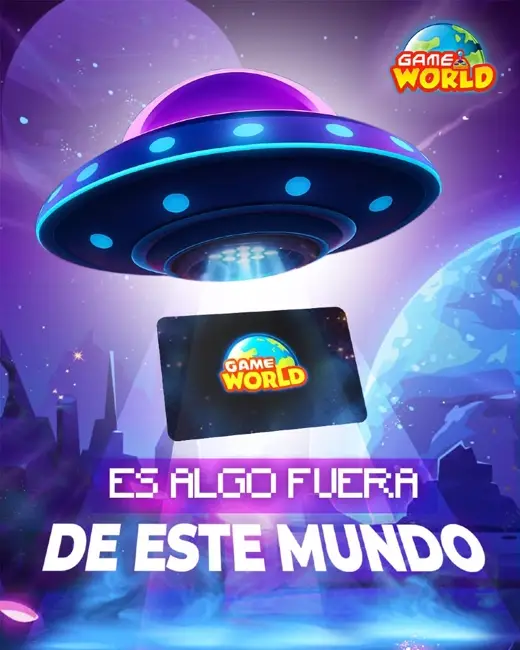
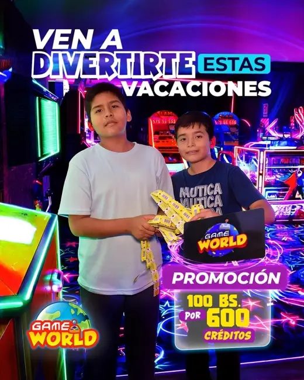
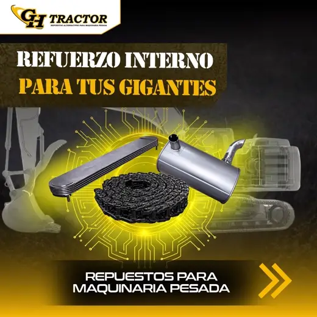
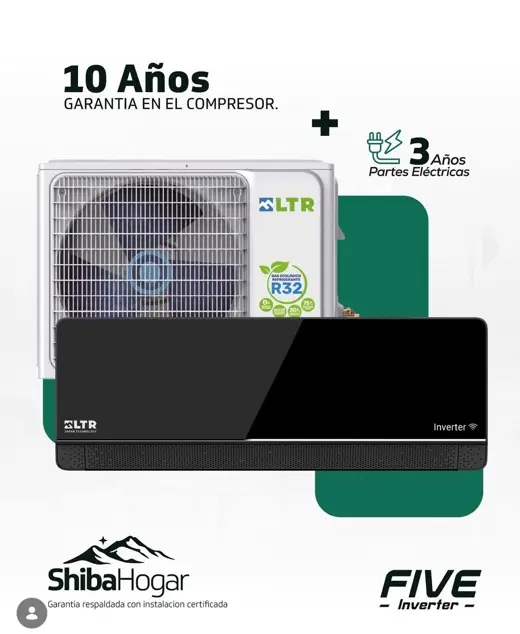
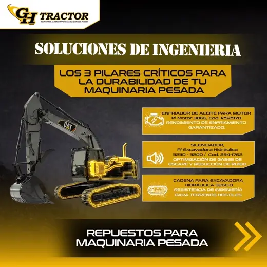
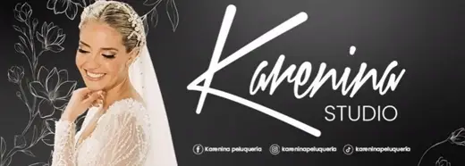
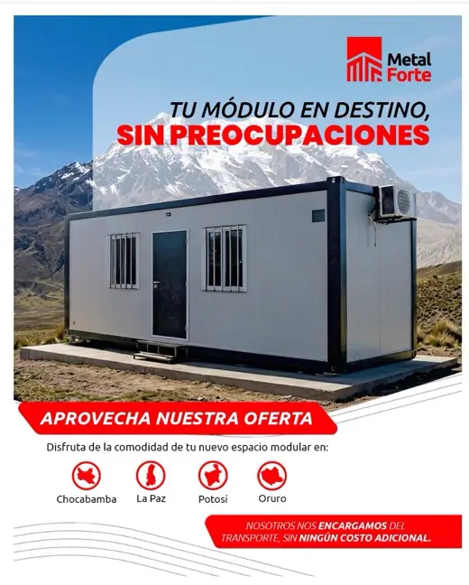
Bajo acuerdo
Y otros que no podemos nombrar.
Son sistemas que corren dentro de empresas que prefieren no figurar. Los
podemos mostrar funcionando en la reunión, sin decir de quién son.
Catálogo digital de serviciosVende y toma pedidos solo · el dueño deja de contestar todo
CRM de ventas propioPipeline y métricas en vivo · el equipo sabe qué cerrar hoy
Central de operacionesMulti-marca, equipo y clientes · toda la agencia en un tablero
Portal de datos en vivoInformación en tiempo real · alto tráfico, siempre al aire
Plataforma con cobrosPagos y facturación automáticos · factura sola, sin intervención
Sistema de visión con cámarasEvidencia verificable · seguridad con prueba forense
El problema de la C no era ninguna sección: era el macro.
El diagnóstico
La C tenía siete bloques de encabezado idénticos — kicker, titular gigante, párrafo, medio ancho muerto a la derecha — y debajo una banda de medios. Siete veces seguidas.
Por eso cada pieza funcionaba suelta y el conjunto no: la página entera tenía un solo ritmo. Nada pesaba más que lo demás.
Cinco movimientos, cuatro composiciones
① Sitios — el titular baja a una columna angosta a la izquierda y las dos tiras arrancan a su lado, saliéndose de la pantalla por la derecha. Se acabó el hueco muerto, y que la tira se corte deja claro que hay más de lo que entra.
② Shiba — el único bloque centrado de toda la página. Que sea el único ya lo señala como el importante, sin necesidad de decirlo.
③ Agentes — el espejo del ①: las conversaciones entran desde la izquierda, el título va a la derecha.
④ Marca, contenido y pauta — eran tres secciones con tres titulares gigantes; ahora son un movimiento con tres rótulos de una línea. El peso lo lleva el material.
⑤ Bajo acuerdo — columna normal y quieta. Después de cuatro movimientos en marcha el ojo necesita un punto de descanso.
Lo que suma de contenido
Cada sitio dice ahora qué resuelve, en la tira: «13.000 ítems buscables + cotización por WhatsApp» pesa mucho más que «Maquinaria pesada». Antes ese dato existía pero estaba escondido detrás de un hover.
Los manuales llevan el nombre de la marca — antes eran siete tapas anónimas.
Cada movimiento cierra con un bloque de datos bajo el titular (rubros cubiertos, qué resuelven los agentes) en vez de dejar la columna colgando.
Se mantiene de la C
Nada detrás de un hover: las doce capturas y las seis conversaciones se ven scrolleando.
Lo que se mueve se mira: cinco tiras a velocidades y direcciones distintas, todas se frenan con el mouse encima.
Los reels se reproducen solos y sin sonido; el video se baja recién al entrar en pantalla.
El caso Shiba, que es el argumento más fuerte de la carpeta.
Sigue pendiente de tu lado
Métricas de Bolivia Fitness: los tres números. Es lo más valioso que falta en toda la web.
Confidencialidad: confirmar que los clientes nombrados aprueban aparecer. Xiaomi y Meta Miami conviene chequearlos.
⚠ Sapien9 con dos papeles: alianza en Tecnología, cliente acá. Decidir cómo se cuenta.
Juan Wagner y GH Tractor no están en projects.ts del sitio en producción.
Peso: los seis reels que arrancan solos son ~8 MB. En producción conviene recortarlos a 6-8 segundos.
Ideal: una o dos frases de testimonio de clientes reales. Hoy no hay ninguna en toda la web.